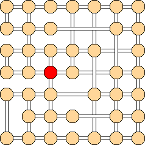
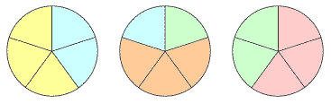

| ||||||
| |||||||||
|
| ||||||
| |||||||||
Make 4 words by rearranging the letters in the words: A type of nut: _ _ _ _ _ _ _ _
At the end of a holiday dinner, there are 3 pies to be divided
1. AT SIXES AND SEVENS
Write 2009 using six 7's. You may use as many of
the arithmetic symbols + – × ÷ ^ ( ) as you like.
2. DELIVERY ROUTE
Help the post office deliver holiday presents in this small town. Start at
the post office (shown in red below), visit each intersection exactly once,
and return to the post office without using any road more than once. 
3. HOLIDAY ANAGRAM
CHANUKAH SOLSTICE KWANZAA
Something you might carry several of those nuts in: _ _ _ _
A type of tree: _ _ _
Something you might use to cut down that tree: _ _ _ _ _ _ _ _
4. DIVIDING LEFTOVERS
equally among 5 guests. One way to do this is to cut each pie
into 5 equal pieces, and give each guest 3 pieces. This would
make the smallest piece of pie 1⁄5. Find a way to divide the pies
equally among the guests so that the smallest piece of pie is 1⁄4.
 
5. SANTA'S HELPER
In the alphametic below, each letter stands for a different digit.
Determine which digit each letter represents so that the sum is true.